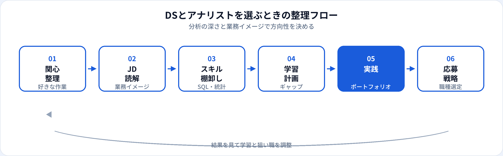

「データサイエンティスト」と「データアナリスト」は、どちらもデータを扱う職種ですが、日常業務の中心と求められる分析の深さが異なります。本記事では、データサイエンティスト（以下 DS）とデータアナリストを、業務・スキル・年収・キャリアの観点で比較し、2026年6月時点の市場感覚で「どちらを目指すか」の判断材料を整理します。
一言でいうと何が違う？
データアナリストは、SQLとBIでKPIを追い、可視化して共有する比重が高い職種です。データサイエンティストは、仮説を立てて統計・機械学習で検証し、意思決定や施策に結びつける比重が高い職種です。
現場では肩書きと実務が一致しないことも多く、「アナリスト」でもモデル構築をする、「DS」でも定型レポートを担う、という重なりがあります。求人票を読むときは肩書きより具体的な業務記述を見るのが確実です。
比較一覧表
| 観点 | データアナリスト | データサイエンティスト |
|---|---|---|
| 主な成果物 | ダッシュボード、定例レポート、KPI推移 | 分析レポート、モデル、施策提案、効果検証 |
| 中心スキル | SQL、BI、基礎統計 | Python、統計、機械学習、仮説検証 |
| 問いの立て方 | 与えられたKPIを追うことが多い | 自ら仮説を立てることが多い |
| 未経験の入りやすさ | 比較的入りやすい | 実務・学習量のハードルがやや高い |
| 年収目安（当サイト） | 400万〜800万円 | 500万〜1,100万円 |
| 詳細ガイド | データアナリストとは | データサイエンティストとは |
業務内容の違い

データアナリストの典型業務
週次・月次のKPIレポート、ダッシュボード保守、部門別の集計、異常値の共有。施策の「結果を見る」側に立つことが多い。
データサイエンティストの典型業務
探索的分析、A/Bテスト設計、予測モデル構築、示唆の言語化、施策提案。施策の「何をすべきか」をデータで支えることが多い。
共通点はSQLでデータを引き、ビジネスに伝わる形にすることです。違いは、その先にモデルや因果の議論まで踏み込むか、安定したレポーティングと可視化に注力するかに現れやすいです。
スキル要件の違い
| スキル | データアナリスト | データサイエンティスト |
|---|---|---|
| SQL | 必須（日常の中心） | 必須 |
| BI・可視化 | 必須（日常の中心） | 重要（説明に使う） |
| Python | 任意〜中級でプラス | 必須級が多い |
| 統計・仮説検定 | 基礎（構成比・前年比など） | 必須（実験設計まで） |
| 機械学習 | 必須ではない | 求人により必須級 |
学習のつながり
アナリストとして SQL・BI を固めたうえで、G検定の相関（TF-221）やロジスティック回帰（TF-024）などで統計・MLの概念を足していくのが、DSへの現実的なステップです。
年収の違い
当サイトの職種マスタでは、データアナリスト 400万〜800万円、データサイエンティスト 500万〜1,100万円を目安としています（2026年6月時点の一般的な相場感）。DSのほうが上限・下限ともに高い帯域に置かれることが多いですが、ドメイン特化のシニアアナリストや外資系のBIポジションではDSと同等帯になることもあります。
年収だけで選ぶより、自分が続けたい作業（集計・可視化 vs 仮説・モデル）と合致するかを優先するほうが、中長期の満足度は高くなりやすいです。
どちらを選ぶべきか
| データアナリスト向きのサイン | データサイエンティスト向きのサイン |
|---|---|
| KPIを安定して追い、関係者に届ける仕事が好き | 「なぜ？」を自分から問い、仮説を検証するのが好き |
| SQLとグラフで素早く答えを出すことに充実感がある | Pythonで分析コードを書き、モデル精度にこだわりたい |
| 未経験・異業種から最短でデータ職に入りたい | 統計・MLの学習時間を確保できる |
| 定型レポートと改善サイクルが得意 | 施策提案や実験設計まで関わりたい |
迷ったときは、まずデータアナリスト相当のポートフォリオ（SQL＋ダッシュボード）を作り、そこから統計・Pythonを足してDS寄りの案件に挑戦する方法がリスクが低いです。
相互移行・ステップアップ
-
アナリスト → DS（最も多いルート）
レポーティング経験を土台に、統計・Python・機械学習のポートフォリオを追加。社内で分析高度化プロジェクトに参加する。
-
DS → アナリスト（選択的）
モデル開発よりBI・部門密着の仕事を選ぶ転職。ライフスタイルや得意領域の見直しで起こることも。
-
両方 → 機械学習エンジニア / データエンジニア
実装・パイプライン寄りのスキルを足し、機械学習エンジニアやデータエンジニアへ。SQLは共通資産になる。
よくある質問
未経験者はどちらが現実的？
一般的にはデータアナリストのほうが入口として現実的です。SQLとBIを中心に学び、必要に応じてDSへステップアップするルートが多いです。
年収はデータサイエンティストのほうが高い？
目安としてはDSのほうが帯域が高いことが多いです。ただし経験・業界・ドメインにより大きく変わります。
データアナリストからデータサイエンティストに転職できる？
可能です。統計・Python・仮説検証の実績をポートフォリオで示すのが効果的です。詳しくは各職種ガイドを参照してください。
同じ会社で役割は分かれている？
データ組織が成熟している企業では分かれていることが多いです。小規模チームでは一人が両方を担うこともあります。
生成AIはどちらの仕事に影響する？
SQLの下書きやレポート要約など、両職種で生産性向上に使われています。最終的な指標定義と解釈の責任は人間側に残るため、基礎スキルは依然として重要です。